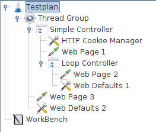

|
About
Download
Documentation
Tutorials (PDF format)
Community
Foundation
|
|
4. Elements of a Test Plan
|
The Test Plan object has a checkbox called "Functional Testing". If selected, it
will cause JMeter to record the data returned from the server for each sample. If you have
selected a file in your test listeners, this data will be written to file. This can be useful if
you are doing a small run to ensure that JMeter is configured correctly, and that your server
is returning the expected results. The consequence is that the file will grow huge quickly, and
JMeter's performance will suffer. This option should be off if you are doing stress-testing (it
is off by default).
If you are not recording the data to file, this option makes no difference.
You can also use the Configuration button on a listener to decide what fields to save.
|
4.1 ThreadGroup
¶
|
Thread group elements are the beginning points of any test plan.
All controllers and samplers must be under a thread group.
Other elements, e.g. Listeners, may be placed directly under the test plan,
in which case they will apply to all the thread groups.
As the name implies, the thread group
element controls the number of threads JMeter will use to execute your test. The
controls for a thread group allow you to:
-
Set the number of threads
-
Set the ramp-up period
-
Set the number of times to execute the test
Each thread will execute the test plan in its entirety and completely independently
of other test threads. Multiple threads are used to simulate concurrent connections
to your server application.
The ramp-up period tells JMeter how long to take to "ramp-up" to the full number of
threads chosen. If 10 threads are used, and the ramp-up period is 100 seconds, then
JMeter will take 100 seconds to get all 10 threads up and running. Each thread will
start 10 (100/10) seconds after the previous thread was begun. If there are 30 threads
and a ramp-up period of 120 seconds, then each successive thread will be delayed by 4 seconds.
Ramp-up needs to be long enough to avoid too large a work-load at the start
of a test, and short enough that the last threads start running before
the first ones finish (unless one wants that to happen).
Start with Ramp-up = number of threads and adjust up or down as needed.
By default, the thread group is configured to loop once through its elements.
Version 1.9 introduces a test run
scheduler
.
Click the checkbox at the bottom of the Thread Group panel to reveal extra fields
in which you can enter the start and end times of the run.
When the test is started, JMeter will wait if necessary until the start-time has been reached.
At the end of each cycle, JMeter checks if the end-time has been reached, and if so, the run is stopped,
otherwise the test is allowed to continue until the iteration limit is reached.
Alternatively, one can use the relative delay and duration fields.
Note that delay overrides start-time, and duration over-rides end-time.
|
|
|
4.2 Controllers
¶
|
JMeter has two types of Controllers: Samplers and Logical Controllers.
These drive the processing of a test.
Samplers tell JMeter to send requests to a server. For
example, add an HTTP Request Sampler if you want JMeter
to send an HTTP request. You can also customize a request by adding one
or more Configuration Elements to a Sampler. For more
information, see
Samplers
.
Logical Controllers let you customize the logic that JMeter uses to
decide when to send requests. For example, you can add an Interleave
Logic Controller to alternate between two HTTP Request Samplers.
For more information, see
Logical Controllers
.
|
|
|
4.2.1 Samplers
¶
|
Samplers tell JMeter to send requests to a server and wait for a response.
They are processed in the order they appear in the tree.
Controllers can be used to modify the number of repetitions of a sampler.
JMeter samplers include:
-
FTP Request
-
HTTP Request
-
JDBC Request
-
Java object request
-
LDAP Request
-
SOAP/XML-RPC Request
-
WebService (SOAP) Request
Each sampler has several properties you can set.
You can further customize a sampler by adding one or more Configuration Elements to the Test Plan.
If you are going to send multiple requests of the same type (for example,
HTTP Request) to the same server, consider using a Defaults Configuration
Element. Each controller has one or more Defaults elements (see below).
Remember to add a Listener to your test plan to view and/or store the
results of your requests to disk.
If you are interested in having JMeter perform basic validation on
the response of your request, add an
Assertion
to
the sampler. For example, in stress testing a web application, the server
may return a successful "HTTP Response" code, but the page may have errors on it or
may be missing sections. You could add assertions to check for certain HTML tags,
common error strings, and so on. JMeter lets you create these assertions using regular
expressions.
JMeter's built-in samplers
|
|
|
4.2.2 Logic Controllers
¶
|
Logic Controllers let you customize the logic that JMeter uses to
decide when to send requests.
Logic Controllers can change the order of requests coming from their
child elements. They can modify the requests themselves, cause JMeter to repeat
requests, etc.
To understand the effect of Logic Controllers on a test plan, consider the
following test tree:
-
Test Plan
-
Thread Group
-
Once Only Controller
-
Load Search Page (HTTP Sampler)
-
Interleave Controller
-
Search "A" (HTTP Sampler)
-
Search "B" (HTTP Sampler)
-
HTTP default request (Configuration Element)
-
HTTP default request (Configuration Element)
-
Cookie Manager (Configuration Element)
The first thing about this test is that the login request will be executed only
the first time through. Subsequent iterations will skip it. This is due to the
effects of the
Once Only Controller
.
After the login, the next Sampler loads the search page (imagine a
web application where the user logs in, and then goes to a search page to do a search). This
is just a simple request, not filtered through any Logic Controller.
After loading the search page, we want to do a search. Actually, we want to do
two different searches. However, we want to re-load the search page itself between
each search. We could do this by having 4 simple HTTP request elements (load search,
search "A", load search, search "B"). Instead, we use the
Interleave Controller
which passes on one child request each time through the test. It keeps the
ordering (ie - it doesn't pass one on at random, but "remembers" its place) of its
child elements. Interleaving 2 child requests may be overkill, but there could easily have
been 8, or 20 child requests.
Note the
HTTP Request Defaults
that
belongs to the Interleave Controller. Imagine that "Search A" and "Search B" share
the same PATH info (an HTTP request specification includes domain, port, method, protocol,
path, and arguments, plus other optional items). This makes sense - both are search requests,
hitting the same back-end search engine (a servlet or cgi-script, let's say). Rather than
configure both HTTP Samplers with the same information in their PATH field, we
can abstract that information out to a single Configuration Element. When the Interleave
Controller "passes on" requests from "Search A" or "Search B", it will fill in the blanks with
values from the HTTP default request Configuration Element. So, we leave the PATH field
blank for those requests, and put that information into the Configuration Element. In this
case, this is a minor benefit at best, but it demonstrates the feature.
The next element in the tree is another HTTP default request, this time added to the
Thread Group itself. The Thread Group has a built-in Logic Controller, and thus, it uses
this Configuration Element exactly as described above. It fills in the blanks of any
Request that passes through. It is extremely useful in web testing to leave the DOMAIN
field blank in all your HTTP Sampler elements, and instead, put that information
into an HTTP default request element, added to the Thread Group. By doing so, you can
test your application on a different server simply by changing one field in your Test Plan.
Otherwise, you'd have to edit each and every Sampler.
The last element is a
HTTP Cookie Manager
. A Cookie Manager should be added to all web tests - otherwise JMeter will
ignore cookies. By adding it at the Thread Group level, we ensure that all HTTP requests
will share the same cookies.
Logic Controllers can be combined to achieve various results. See the list of
built-in
Logic Controllers
.
|
|
|
4.2.3 Test Fragments
¶
|
The Test Fragment element is a special type of
controller
that
exists on the Test Plan tree at the same level as the Thread Group element. It is distinguished
from a Thread Group in that it is not executed unless it is
referenced by either a
Module Controller
or an
Include_Controller
.
This element is purely for code re-use within Test Plans and was introduced in Version 2.5
|
|
|
4.3 Listeners
¶
|
Listeners provide access to the information JMeter gathers about the test cases while
JMeter runs. The
Graph Results
listener plots the response times on a graph.
The "View Results Tree" Listener shows details of sampler requests and responses, and can display basic HTML and XML representations of the response.
Other listeners provide summary or aggregation information.
Additionally, listeners can direct the data to a file for later use.
Every listener in JMeter provides a field to indicate the file to store data to.
There is also a Configuration button which can be used to choose which fields to save, and whether to use CSV or XML format.
Note that all Listeners save the same data; the only difference is in the way the data is presented on the screen.
Listeners can be added anywhere in the test, including directly under the test plan.
They will collect data only from elements at or below their level.
There are several
listeners
that come with JMeter.
|
|
|
4.4 Timers
¶
|
By default, a JMeter thread sends requests without pausing between each request.
We recommend that you specify a delay by adding one of the available timers to
your Thread Group. If you do not add a delay, JMeter could overwhelm your server by
making too many requests in a very short amount of time.
The timer will cause JMeter to delay a certain amount of time
before
each
sampler which is in its
scope
.
If you choose to add more than one timer to a Thread Group, JMeter takes the sum of
the timers and pauses for that amount of time before executing the samplers to which the timers apply.
Timers can be added as children of samplers or controllers in order to restrict the samplers to which they are applied.
To provide a pause at a single place in a test plan, one can use the
Test Action
Sampler.
|
|
|
4.5 Assertions
¶
|
Assertions allow you to assert facts about responses received from the
server being tested. Using an assertion, you can essentially "test" that your
application is returning the results you expect it to.
For instance, you can assert that the response to a query will contain some
particular text. The text you specify can be a Perl-style regular expression, and
you can indicate that the response is to contain the text, or that it should match
the whole response.
You can add an assertion to any Sampler. For example, you can
add an assertion to a HTTP Request that checks for the text, "</HTML>". JMeter
will then check that the text is present in the HTTP response. If JMeter cannot find the
text, then it will mark this as a failed request.
Note that assertions apply to all samplers which are in its
scope
.
To restrict the assertion to a single sampler, add the assertion as a child of the sampler.
To view the assertion results, add an Assertion Listener to the Thread Group.
Failed Assertions will also show up in the Tree View and Table Listeners,
and will count towards the error %age for example in the Aggregate and Summary reports.
|
|
|
4.6 Configuration Elements
¶
|
A configuration element works closely with a Sampler. Although it does not send requests
(except for
HTTP Proxy Server
), it can add to or modify requests.
A configuration element is accessible from only inside the tree branch where you place the element.
For example, if you place an HTTP Cookie Manager inside a Simple Logic Controller, the Cookie Manager will
only be accessible to HTTP Request Controllers you place inside the Simple Logic Controller (see figure 1).
The Cookie Manager is accessible to the HTTP requests "Web Page 1" and "Web Page 2", but not "Web Page 3".
Also, a configuration element inside a tree branch has higher precedence than the same element in a "parent"
branch. For example, we defined two HTTP Request Defaults elements, "Web Defaults 1" and "Web Defaults 2".
Since we placed "Web Defaults 1" inside a Loop Controller, only "Web Page 2" can access it. The other HTTP
requests will use "Web Defaults 2", since we placed it in the Thread Group (the "parent" of all other branches).

Figure 1 -
Test Plan Showing Accessability of Configuration Elements
|
|
The
User Defined Variables
Configuration element is different.
It is processed at the start of a test, no matter where it is placed.
For simplicity, it is suggested that the element is placed only at the start of a Thread Group.
|
|
|
|
4.7 Pre-Processor Elements
¶
|
A Pre-Processor executes some action prior to a Sampler Request being made.
If a Pre-Processor is attached to a Sampler element, then it will execute just prior to that sampler element running.
A Pre-Processor is most often used to modify the settings of a Sample Request just before it runs, or to update variables that aren't extracted from response text.
See the
scoping rules
for more details on when Pre-Processors are executed.
|
|
|
4.8 Post-Processor Elements
¶
|
A Post-Processor executes some action after a Sampler Request has been made.
If a Post-Processor is attached to a Sampler element, then it will execute just after that sampler element runs.
A Post-Processor is most often used to process the response data, often to extract values from it.
See the
scoping rules
for more details on when Post-Processors are executed.
|
|
|
4.9 Execution order
¶
|
-
Configuration elements
-
Pre-Processors
-
Timers
-
Sampler
-
Post-Processors (unless SampleResult is null)
-
Assertions (unless SampleResult is null)
-
Listeners (unless SampleResult is null)
|
Please note that Timers, Assertions, Pre- and Post-Processors are only processed if there is a sampler to which they apply.
Logic Controllers and Samplers are processed in the order in which they appear in the tree.
Other test elements are processed according to the scope in which they are found, and the type of test element.
[Within a type, elements are processed in the order in which they appear in the tree].
|
For example, in the following test plan:
-
Controller
-
Post-Processor 1
-
Sampler 1
-
Sampler 2
-
Timer 1
-
Assertion 1
-
Pre-Processor 1
-
Timer 2
-
Post-Processor 2
The order of execution would be:
Pre-Processor 1
Timer 1
Timer 2
Sampler 1
Post-Processor 1
Post-Processor 2
Assertion 1
Pre-Processor 1
Timer 1
Timer 2
Sampler 2
Post-Processor 1
Post-Processor 2
Assertion 1
|
|
|
4.10 Scoping Rules
¶
|
The JMeter test tree contains elements that are both hierarchical and ordered. Some elements in the test trees are strictly hierarchical (Listeners, Config Elements, Post-Procesors, Pre-Processors, Assertions, Timers), and some are primarily ordered (controllers, samplers). When you create your test plan, you will create an ordered list of sample request (via Samplers) that represent a set of steps to be executed. These requests are often organized within controllers that are also ordered. Given the following test tree:
The order of requests will be, One, Two, Three, Four.
Some controllers affect the order of their subelements, and you can read about these specific controllers in
the component reference
.
Other elements are hierarchical. An Assertion, for instance, is hierarchical in the test tree.
If its parent is a request, then it is applied to that request. If its
parent is a Controller, then it affects all requests that are descendants of
that Controller. In the following test tree:
Assertion #1 is applied only to Request One, while Assertion #2 is applied to Requests Two and Three.
Another example, this time using Timers:
In this example, the requests are named to reflect the order in which they will be executed. Timer #1 will apply to Requests Two, Three, and Four (notice how order is irrelevant for hierarchical elements). Assertion #1 will apply only to Request Three. Timer #2 will affect all the requests.
Hopefully these examples make it clear how configuration (hierarchical) elements are applied. If you imagine each Request being passed up the tree branches, to its parent, then to its parent's parent, etc, and each time collecting all the configuration elements of that parent, then you will see how it works.
The Configuration elements Header Manager, Cookie Manager and Authorization manager are
treated differently from the Configuration Default elements.
The settings from the Configuration Default elements are merged into a set of values that the Sampler has access to.
However, the settings from the Managers are not merged.
If more than one Manager is in the scope of a Sampler,
only one Manager is used, but there is currently no way to specify
which
is used.
|
|
|
4.11 Properties and Variables
¶
|
JMeter
properties
are defined in jmeter.properties (see
Gettting Started - Configuring JMeter
for more details).
Properties are global to jmeter, and are mostly used to define some of the defaults JMeter uses.
For example the property remote_hosts defines the servers that JMeter will try to run remotely.
Properties can be referenced in test plans
- see
Functions - read a property
-
but cannot be used for thread-specific values.
JMeter
variables
are local to each thread. The values may be the same for each thread, or they may be different.
If a variable is updated by a thread, only the thread copy of the variable is changed.
For example the
Regular Expression Extractor
Post-Processor
will set its variables according to the sample that its thread has read, and these can be used later
by the same thread.
For details of how to reference variables and functions, see
Functions and Variables
Note that the values defined by the
Test Plan
and the
User Defined Variables
configuration element
are made available to the whole test plan at startup.
If the same variable is defined by multiple UDV elements, then the last one takes effect.
Once a thread has started, the initial set of variables is copied to each thread.
Other elements such as the
User Parameters
Pre-Processor or
Regular Expression Extractor
Post-Processor
may be used to redefine the same variables (or create new ones). These redefinitions only apply to the current thread.
The
setProperty
function can be used to define a JMeter property.
These are global to the test plan, so can be used to pass information between threads - should that be needed.
| Both variables and properties are case-sensitive.
|
|
|
|
4.12 Using Variables to parameterise tests
¶
|
Variables don't have to vary - they can be defined once, and if left alone, will not change value.
So you can use them as short-hand for expressions that appear frequently in a test plan.
Or for items which are constant during a run, but which may vary between runs.
For example, the name of a host, or the number of threads in a thread group.
When deciding how to structure a Test Plan,
make a note of which items are constant for the run, but which may change between runs.
Decide on some variable names for these -
perhaps use a naming convention such as prefixing them with C_ or K_ or using uppercase only
to distinguish them from variables that need to change during the test.
Also consider which items need to be local to a thread -
for example counters or values extracted with the Regular Expression Post-Processor.
You may wish to use a different naming convention for these.
For example, you might define the following on the Test Plan:
HOST www.example.com
THREADS 10
LOOPS 20
You can refer to these in the test plan as ${HOST} ${THREADS} etc.
If you later want to change the host, just change the value of the HOST variable.
This works fine for small numbers of tests, but becomes tedious when testing lots of different combinations.
One solution is to use a property to define the value of the variables, for example:
HOST ${__P(host,www.example.com)}
THREADS ${__P(threads,10)}
LOOPS ${__P(loops,20)}
You can then change some or all of the values on the command-line as follows:
jmeter ... -Jhost=www3.example.org -Jloops=13
|
|
|
|
|